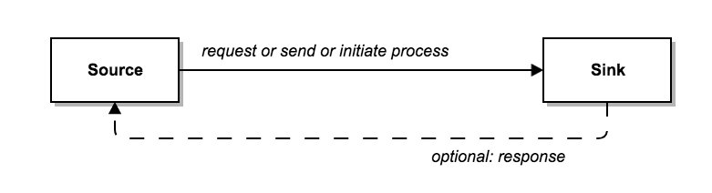
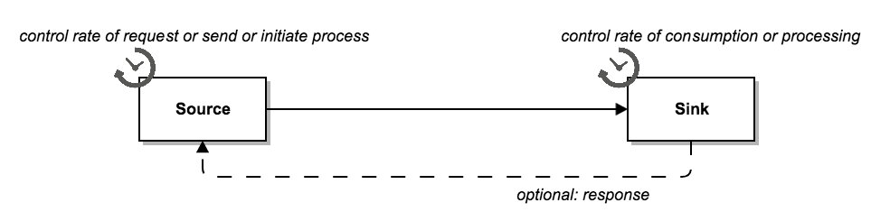
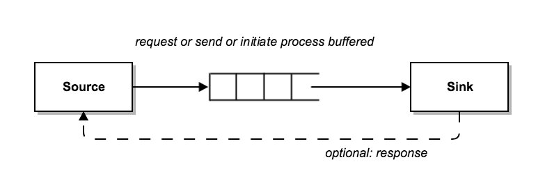
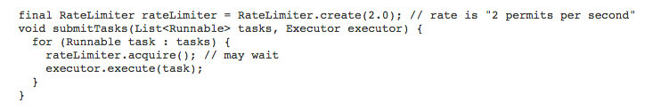
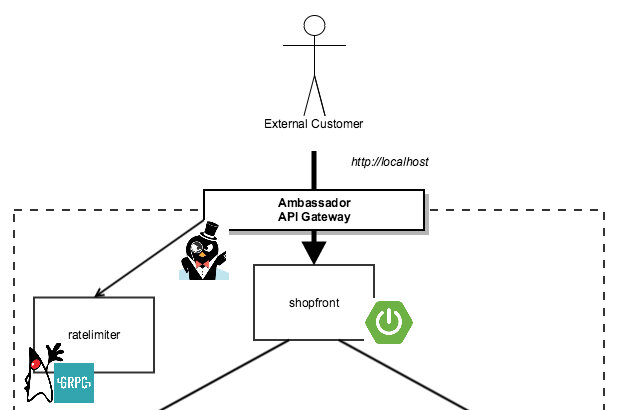

速率限制—分布式系统的一个实用工具part1
在计算领域，速率限制通常用于控制服务发起或消耗的操作速率，或者是请求发送或接收的流量。如果你有一年以上的软件开发经验，那么你应该会遇到这个概念。但是，和很多软件架构所面临的挑战一样，比起实际出现的问题，需要思考的问题会更多。本文概述了现代分布式应用程序中的一些关于速率限制的实现方案、优势和挑战。
为什么需要速率限制？
实现速率限制主要是由于以下三个原因：通过资源节制防止（有意无意的）拒绝服务，限制（潜在的）级联故障的影响，以及限制或计量资源的使用情况。
Twitter 或 Ebay 这样的企业组织使用了一种类似的拒绝服务防治模式：在SaaS API之前放置一个速率限制器，以此来避免针对API后端的拒绝服务恶意攻击，同时也可以为所有消费者提供一致的服务。在那些支付API（如 Stripe ）的减负策略中可以使用速率限制来防止级联故障（通过系统中的一些组件部分降级）。同样，当为外部信息源轮询例像健康检查这些新数据时，也会使用限制（或计量）模式。这样我们只需要定期获取数据，并可以为启动的每个请求付费。
如何选择？
基于简化的原则，我们假设正在处理点对点通信模型中的速率限制。在这种场景下，你可以在数据发送的“发送端”或数据消费“接收端”中的任何地方实施速率限制，当然还有其他“中间件”选项：

- 你可以控制发送端发送请求的速率 ：通过定义时间限制循环来定期发送API请求。
- 你可以控制接收端接收请求的速率：在当前任务/线程处理完成之前拒绝新的入站HTTP连接。

- 你可以使用中间层来缓冲发送的请求：通过将请求放入队列（可以通过定义不同优先级，为请求提供不同级别的SLA）。

- 你可以使用中间层来限制发送的请求：通过使用某种形式的代理或网关。这样当下游服务不再接受请求时，它会切换至断路器。

如何权衡？
如果你正在开发一个需要解决上述问题的系统，可以参考如下方案，并清楚定义在哪些地方（及相应组件）需要实现速率限制。
另一方面，如果你只控制其中一端（比如只控制接收端或只开放公用API），那么你的选择余地就会受到限制，因为你不能依赖现有的设计指南或设计原则（即使系统不包含恶意使用者）。即使你同时控制了两端，你可能仍然想要实现“双保险”，实现同时包括两端的速率限制。
其他需要权衡点包括：
发送端和接收端的处理速率限制的能力
- 有时由于开发模型或可用资源限制等原因，不可能在组件内实施有效的速率限制。
- 在分布式系统中，单个组件的速率限制可能无法提供所需的功能（至少在一定程度上需要其他协调）。例如，如果你的速率限制了某个请求发送端进行连接，你需要横向扩展至两个发送端来满足需求，这样导致允许的发送端变为两个。
- 你可能也不希望后端服务工程师开发速率限制功能，因为这样可能会由于定制开发而引起不同技术栈的差异。
- 如果应用程序负载过重，可能需要将所有速率限制功能放到应用外，以避免在应用中执行速率限制功能导致其性能损失。
- 我相信你听说过“单一职责”原则。因此在粗颗粒度架构级别，你可能会要求在应用外的组件里提供像速率限制这样的辅助功能。
速率限制中间件的故障模式
- 你有必要知道速率限制服务崩溃（服务启动失败或被关闭）时会发生什么？如果服务能缓冲请求，你可能需要定义服务重启策略（期间的请求需要被缓冲至磁盘）。
速率限制中间件的算法灵活性
- 自己实现基于发送端或接收端速率限制功能的主要优势在于是你可以完全控制速率限制算法的实现方式。例如，令牌桶 、 固定窗口 、 滑动窗口 以及通过请求（元）数据来进行算法决策。
- 你需要经常评估哪些算法可以与外部速率限制服务一起“开箱即用”，同时确定是否需要其他外部数据（包括关联的元数据处理）。
案例
更具体一点，我们来看几个例子。
运行一个任务来调用第三方SDK，每次调用都具有请求限制，同时按计量收费（即你控制发送端，但无法控制接收端）。
对于请求限制和按计量收费的方案，我希望实施本地（发送端）速率限制。假设请求超过了速率限制，那么可能会收到一个错误，或者可能被（暂时）阻止。我因此需要确认SLA或检查生产实施文档。无论发生什么，我都不会希望我的应用程序简单地在不断尝试循环连接，因为是这只会浪费我的资源。如果发送端没有基于计量收费的速率限制，我会付出很多钱，而且没有人愿意这样做！
在Java语言中，我经常使用Google开源的 Guava RateLimiter 库来解决这类问题。我写的发送端的应用程序示例就像下面这样：

这是一个基于 Guava RateLimiter JavaDoc 的简单示例，实际上我可能在任务执行逻辑中增加一些异常处理块。
提供一个公共API （即你控制接收端，但无法控制（全部）发送端）
在这种场景下，可以防止API后端过载的唯一方法是通过对接收端进行速率限制，最好是将限制功能放到如API网关这类外部服务上。

结论
通过这篇速率限制文章的三部分，我们了解了速率限制的动机、可以选择的方案和相关的权衡。在下一篇文章中，我将详细介绍如何实现API网关的速率限制算法！